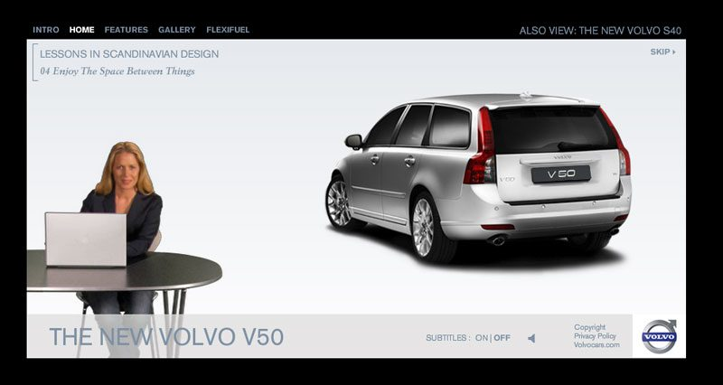

2013

Visualizing the major causes of death in the 20th Century
Visualizing the major causes of death in the 20th Century. Originally a 6m x 2m commission by the Wellcome Collection as a companion piece to the London exhibition: ‘Death: A Self-…
Lire l'articleThe Creative Destruction of Medicine: How the Digital Revolution Will Create Better Health Care
I just finished reading the amazingly interesting Eric Topol (@EricTopol) book: The Creative Destruction of Medicine: How the Digital Revolution Will Create Better Healthcare. Firs…
Lire l'article2012
14 lessons for health startups from a successful health-tech entrepreneur
Copy of an interview done by Frank Boermeester for HealthStartup Europe. Original is here. 1 Begin with a concrete market need Telemis was founded in 1999 as a spin-off company fro…
Lire l'article
Mini retour sur Starter (RTBF - La Deux)
Ce soir, j'ai regardé l'émission Starter sur La Deux. Ce que j'ai bien aimé 1. Les idées en général. Plein de domaines différents, peu ou pas de technologie, de Web 2.0 et compagni…
Lire l'article2011
UX Evolutions: The Future of the Camera
The WVIL camera is a concept camera envisioned by Artefact's award-winning design team. The patent-pending WVIL system takes the connectivity and application platform capabilities …
Lire l'articleInnovation tips (& self promotion)
Fred Ooms is deeply passionate about creativity, innovation, design thinking and entrepreneurship. Through his Brain Twist blog, he conducts interviews with doers about those topic…
Lire l'articlePassionate People / From an IDEA ... to an APP
La présentation du dernier Passionate People est en ligne ! Vous trouverez toutes les infos sur le concept sur le blog Passionate People. 24 mars 2011, « From an IDEA ... to an APP…
Lire l'article2010
Microsoft Boostcamp: un projet qu'il est bien
Ces deux dernières semaines, j'ai eu l'opportunité de participer deux jours au second Boostcamp du Microsoft Innovation Center de Mons, Belgique. L'idée de base était de venir part…
Lire l'articlePassionate People / "Innovating in Large Organizations"
La présentation du dernier Passionate People (anciennement Telemis Technology Thursdays) sont en ligne ! Vous trouverez toutes les infos sur le concept sur le blog Passionate Peopl…
Lire l'article2009
Passionate People / "Social Media - WTF(uzz)?"
Les vidéos du dernier Passionate People (anciennement Telemis Technology Thursdays) sont en ligne ! Vous trouverez toutes les infos sur le concept sur le blog Passionate People. 10…
Lire l'articleTelemis Technology Thursdays - Return on Marketing Investment
Les vidéos du dernier Telemis Technology Thursdays sont en ligne ! Le concept est rappelé en bas de ce post. Le sujet était "Return on Marketing Investment" présenté par Vanessa va…
Lire l'articleTelemis Technology Thursdays
Telemis Technology Thursdays? Cela fait quelques mois que Telemis a lancé ce nouveau concept, il est temps de vous en parler et de le promouvoir. L'idée principale derrière les Tel…
Lire l'articleQuote of the day #53
"Hybrid cars are like Mermaids. When you want a fish, you get a woman. When you want a woman, you get a fish." Carlos Ghosn, quoted in Shai Agassi's talk at TED'09. And, you alread…
Lire l'articleQuote of the day #50
“If I had asked my customers what they wanted, they would have said a faster horse.” Henry Ford I should definitely spend some time on writing a post on how we use user feedback to…
Lire l'article(sans titre)
Intéressant ce Sixth Sense de Pattie Maes. J'aime assez les concepts qui sont utilisés. D'abord, il y a cette d'interface: pilotage avec les doigts qu'on a déjà souvent vu surtout …
Lire l'articleQuote of the day #49
"A partir du moment où tu ne changes pas quelque chose dans le code de ton application parce que "c'est chiant à faire" ou "trop compliqué" ... tu es foutu .. c'est l'application q…
Lire l'article2008
Quote of the day #42 (Mitch Ditkoff,
"In an extraordinary move, destined to be emulated by forward thinking business leaders around the world, I've just outsourced all my sleep to a guy named Namdev in New Delhi. ..."…
Lire l'articleTouchless Interface (Part II) - Hello Tom Cruise
Another Touchless Interface coming from XI Ingénierie (Toulouse, France!). I still don't quite understand what the general business of the company has to do with Touchless Interfac…
Lire l'articleVotre évier est une enceinte?
Voilà un design auquel il faut (ne pas?) penser. Le gain de place est certes intéressant, mais placer de l'électronique proche de l'eau n'est pas forcément le premier conseil qu'on…
Lire l'articleQuote of the day #42 (Paul Graham, Ycombinator)
Paul Graham, founder of YCombinator, speaks at Startup School 08 about how to create a successful startup
Lire l'articlePixar’s Brad Bird on Fostering Innovation
10 key lessons from Pixar's Brad bird on Innovation. Full article available here. Lesson One: Herd Your Black Sheep Lesson Two: Perfect is the Enemy of Innovation Lesson Three: Loo…
Lire l'articleDipity: Create Timelines, begin with yours
Un petit tour sur Dipity. Vous créez votre profile, vous encodez vos logins Last.fm, Flickr, Picasaweb, blog perso, Twitter, et .... hop ... votre Personal Timeline est créée. En l…
Lire l'articlePhoto Slideshow sur la PS3
Je n'avais pas essayé de visionner des photos sur la PS3 avant hier soir. J'ai été surpris par ces slideshows sympathiques. Une petite vidéo pour illustrer. Bon je sais, c'est trop…
Lire l'articleTouchless interface
J'adore .... Ca vient de LM3Labs. AirStrike with a plain PC, free air precise interactivity from Nicolas Loeillot on Vimeo.
Lire l'articleChristmas gifts? (update April2008, Canon HV30)
Un petit update sur ce post de Décembre 2007. - Canon HV20. Seems to be the best affordable HD camcorder for the moment ( around 900 800 EUR and Canon HV30 at 1000 EUR). GOT IT - M…
Lire l'articleQuelle révolution: Itunes, premier distributeur de musique
Vous l'avez certainement lu le week-end dernier: Apple a annoncé que sa boutique de téléchargement en ligne iTunes Store était devenu le premier distributeur musical aux Etats-Unis…
Lire l'articleIl y a un nouveau Mac dans l'air
Eh bien voila, et un de plus. J'ai été chercher mon Mac Book Air Mercredi soir. Petit rappel des évenements : Didier va passe au magasin Apple a Stockel. Il y a 4 Macbook Air de st…
Lire l'articleIkea : Mais comment font-ils ?
On peut être ou pas un fan d'Ikea, il faut reconnaître qu'ils sont incroyables pour tout ce qui touche à l'expérience du client dans ses magasins. Ca en devient tellement naturel, …
Lire l'articleNouveau : le "service client" arrive enfin en Belgique
Après de longues années d'attente ils semblent que le service client (customer care ou customer service comme on dit aux amériques) pointe enfin son nez en Belgique. De manière gén…
Lire l'articleTeaching how to build Facebook Apps
Interesting piece of article many people read and quoted from Read/Write Web blog this week. Dr. BJ Fogg and Dave McClure taught a class last semester at Stanford on Building Faceb…
Lire l'articleTwitter explained in 2.5 minutes
For Pierre and all the others ...
Lire l'article
Email, Agenda, Feeds, les outils pour s'organiser aujourd'hui ...
Comme je suis toujours à la recherche de nouveaux outils pratiques pour travailler plus efficacement (en pensant encore naïvement que l'outil est la solution alors que je sais que …
Lire l'articleMac Book Pro : the white screen of death ..
Today was my first bad day with a Mac. I did the usual "update software" ... and rebooted the mac. And bang .. white screen of death ... blank screen nothing else, no mouse, no key…
Lire l'articleThermographie infrarouge, la techno aux services de l'écologie
Après avoir discuté de travaux dans une maison, Olivier m'a envoyé le lien vers cette société: Eco Energie Services Grâce à une camera infrarouge dotée d’une technologie de pointe,…
Lire l'articleComment survivait on il y a 10 ans ?
Ca fait un petit temps que je pensais écrire ce post alors finalement entre deux panades, je me lance pour le premier draft. En gros je vais faire le tour de tout ce qu'on fait auj…
Lire l'articleWhat is a BookStairsShelf?
Ingenuity is not overrated
Lire l'articleIdée de business? Le problème du jour: suivre son poids
L'autre jour, après ma bonne gastro, je me suis pesé et j'avais perdu 4 kilos. Bien que pas très bon, c'est toujours une surprise accueillie positivement. En me pesant, je me suis …
Lire l'article"GoogleHealth"
Posted yesterday on CNN: Google ventures into health records biz Google Inc. will begin storing the medical records of a few thousand people as it tests a long-awaited health servi…
Lire l'articleModu - Make new connections
Vu sur Techcrunch Modut is a tiny modular phone that can be slipped into different device “jackets”—like an MP3 player, a GPS device, a bigger cell phone, car stereo, or a digital …
Lire l'articleIdée de business? Le problème du jour: Rénovation dans une maison
A priori, quand on a un problème, et qu'on ne trouve pas de solution facile, il y a une opportunité de lancer un service ou un produit. Personnellement, je me positionne systématiq…
Lire l'articleQuoi de plus convivial pour intéragir?
Après une série de post sur Johnny Chung Lee de l’Université de Carnegie Mellon et ses applications interactives détournées de la WII, je suis tombé sur 3DV Systems. Et je suis enc…
Lire l'articleScanSnap paperless office
I just received my new impulsive purchase. A ScanSnap 510M scanner (Fujitsu, about 500€) to connect on my mac book at home and scan everything that comes in. Well, after 15 minutes…
Lire l'articleSteadicam: un peu d'histoire
En me balladant sur le site de Johnny Chung Lee, qui développe ses trucs de fous pour la WII, j'ai vu qu'il expliquait également comment construire une . Si vous êtes fainéant,…
Lire l'articleL'appareil photo le plus simple au monde?
Un bouton, pas de cable, 5 couleurs différentes, c'est encore plus facile qu'un Ipod Nano. Il ne joue pas de la musique, il prend des photos !
Lire l'articleEncore des applications ingénieuses sur base de la WII
Vous vous souvenez de Johnny Chung Lee de l'Université de Carnegie Mellon et de son Immersion 3D sur écran 2D classique ? Le voilà de retour avec une autre utilisation ingénieuse d…
Lire l'articleQuote of the day #28
Air: The Only Thing Left In Your Wallet After You Buy Apple’s New Laptop Duncan Riley, on Techcrunch
Lire l'articleSteve Jobs Macworld Jan08 Keynote in 60 seconds
Michael Arrington posted a 60 seconds version of Steve Jobs January08 Macworld keynote. All the 4 things in less than 60'. The full keynote is available on Apple website. youtube=h…
Lire l'articleQuote of the day #27
"Each case is different, but really, if you’re not trying to change the world, what is the point of making a presentation?" Garr Reynolds, interviewed by Guy Kawasaki Garr Reynold …
Lire l'articleDesign+Innovation ou Design?
Voilà un bel objet créé par Yanko Design Ils présentent le produit comme ayant 2 intérêts: 1. Ca embellit vos vieux radiateurs pourris (ils ne le disent pas comme cela) (= Design) …
Lire l'articleWill you next cellphone be your new video-projector?
This is just really amazing ! 3M is now providing consumer electronics manufacturers with a revolutionary advancement in the emerging field of miniature projection technology. 3M s…
Lire l'articleIt's not an Iphone, its a bigass table
Le plus drôle, une parodie de Surface signée SarcasticGamer.com. Le plus intéressant, une review du produit par les mêmes personnes invités par Microsoft suite à la vidéo virale. C…
Lire l'articleVideoTrace: interactive 3D models generation
VideoTrace is a system for interactively generating realistic 3D models of objects from video—models that might be inserted into a video game, a simulation environment, or another …
Lire l'articleWarner abandonne le HD-DVD? Victoire définitive pour le Blu-Ray?
La Warner qui faisait l'équilibre entre le Blu-Ray et le HD-DVD se rangera définitivement du côté du Blu-Ray d'ici juin 2008. Voilà qui sent bon pour Sony. Actuellement on en est d…
Lire l'article2007
Immersion 3D sur écran 2D classique ... c'est ouaw
En lisant ce post sur Business Garden, je ne peux m'empêcher de vous en parler. "L'idée est de transformer un écran ordinaire en une véritable fenêtre ouverte sur un univers en 3D …
Lire l'articleChristmas gifts?
If you want to get me a nice Christmas present, you will find some nice ideas hereunder :-) I really would like to get back on movie editing, so that would be the list of mandatory…
Lire l'article
Premières expériences Mac
Eh bien voila, un petit mac book pro est en route vers chez moi et devrait arriver comme le petit jésus dans quelques jours. J'ai donc enfin cédé à la pression de didier et décidé …
Lire l'articleQuote of the day #24
"Memo to Badoo, Bebo, Catster, Dogster, Facebook, Faceparty, Flickr, Flixster, Hi5, Hyves, Imbee, Imeem, MySpace, Mixi, Pizco, Pownce, Takkle, Twitter, Virb, Vox, Xanga, Xing, Zoom…
Lire l'articleChris Anderson's Nokia World 2007 Keynote
Chris Anderson's Nokia World 2007 Keynote, a keynote to see (46 minutes). Perfect slides, Great speaker. And if you haven't read Chris Anderson's Long Tail ... here is my review of…
Lire l'article52 minutes sur Google et un peu plus ...
via Loïc Le Meur, un reportage intéressant (bien que très général) sur Google. Du coup j'ai "googlé" Marissa Mayer et je suis tombé sur deux points intéressants 1. Marissa Mayer's …
Lire l'article
Domotique, here I come
Voilà c'est parti, je me lance officiellement dans la domotique. Première commande de débutant sur un site (belge) en plus .. www.intellihome.be Merci pour votre commande! Recapitu…
Lire l'article
User of mobile phone signals to track people path?
Plosson pointed out the website of Path Intelligence. This UK-based company uses mobile signals to track traffic in shopping centers. Path Intelligence first application allows sho…
Lire l'article
Bilan 2007 de la HD
Un article intéressant sur Ecran Large qui propose un bilan de la HD pour 2007, sur base d'une étude de GK. Le graph suivant est le plus intéressant. Il montre qu'au taux de croiss…
Lire l'articleLe lien du jour: Le Web3 en live
Assurément le lien du jour ... <http://live.vpod.tv/
Lire l'articleWIFI available in airplane? Next week!
Published December 7th, 2007 on Le Soir. JetBlue proposera dès mardi sur l’un de ses appareils un service d’e-mail et de messagerie instantanée gratuit, et elle sera suivie d’Ameri…
Lire l'articleTetris on Building
You should have a look a the MIKONTALOLIGHTS project. This is definitely the kind of projects that should be asked to studends. How fun! The object of MIKONTALOLIGHTS was to create…
Lire l'articleSpit and Go Genetic
Amazing! I was amazed this evening while reading this post on Guy Kawasaki blog. 23andMe is a company that basically get your Genomic data from a spit sample. First you order your …
Lire l'articleDe l'importance du capuchon
youtube=http://www.youtube.com/watch?v=qwfN72A-D-8&rel=1]
Lire l'articleSeesmic update
Je viens d'écouter Loïc Le Meur sur BFM. Toujours aussi enthousiaste, peut-être même encore plus depuis qu'il habite à San Fransisco. Sympa. J'ai surtout écouté ce qu'il disait sur…
Lire l'articleZune 2 - nice features
Based on Zune 2: five things Microsoft did right Two nice features that will be avaible on the next Zune. None of the two is really revolutionary but I really don't understand why …
Lire l'articleLoïc Lemeur New Startup
Loïc in starting is new company in SF. As from today, he will be posting a video per day. Probably a nice way to learn things about entrepreneurship. youtube=http://www.youtube.com…
Lire l'articleGood Luck Randy
Randy Pausch is a Professor of Computer Science, Human-Computer Interaction, and Design at Carnegie Mellon, where he was the co-founder of Carnegie Mellon's Entertainment Technolog…
Lire l'articleKawasaki's The Art of Evangelism Web Conference (Sep07)
Posted on Guy Kawasaki website, an invitation to the free online WebEx seminar called “The Art of Evangelism.” During this seminar Guy will explain the strategies and tactics of ev…
Lire l'articleQuote of the day #16
"What I hear, I forget. What I see, I remember. What I do, I understand" old Chinese Proverb read in The Elegant Solution.
Lire l'articleLamborghini Reventon, voiture ou avion de chasse?
Lire l'articleMechanical Turk and Steve Fossett
I hadn't heard of Amazon Mechanical Turk before today and it's use to try to find Steve Fossett. Amazon's definition is "we build complex software applications based on the things …
Lire l'articleGoogle Library
Grâce à Pierre, je suis passé sur la Google Library ce soir. Je n'avais jamais regardé à quoi cela ressemblait. Impressionnant. Une page de recherche simple à la Google, une page d…
Lire l'articleGorillaz live, près de chez vous?
Voilà un post que j'aurai dû faire il y a quelques temps déjà. Un sujet que j'apprécie, un mélande de musique, de vidéo, de techno et de buzz. Tout ce que j'aime. Vous connaissez l…
Lire l'articleNikon D300
J'avais oublié qu'on parlait de nouveaux Nikon pour la mois d'août. J'ai un peu zappé les infos sur les dernières semaines. Donc, D3 et D300 sont au rendez-vous. Vous pouvez clique…
Lire l'articleHTC Touch, un QTEK S110 en petit
J'ai un QTEK S110 dont je suis très content. Voilà qu'un ami me montre son HTC Touch. C'est la même chose en plus petit et plus léger, donc forcément c'est mieux. Sinon le nouveau …
Lire l'articleAnimoto, pas mal du tout
Animoto est ouvert depuis ce 16 août. Ca vaut une petite visite. Voilà, ci-dessous, ce qu'on peut faire en 30 secondes montre en main. C'est un compagnie basée à New-York qui aurai…
Lire l'articleThe Art of the Start
Après avoir lu l'excellent Founders at work, ma chance continue, le bouquin de Kawasaki est intéressant. Je lis toujours les avis sur Amazon,mais je n'ai toujours pas trouvé une ma…
Lire l'articleData Visualization
Two weeks ago, Smashing Magazine published an article on the most interesting modern approaches to data visualization. Didn't have the time to link to it before today (first real v…
Lire l'articleEric Schmidt on Web 3.0
Short but interesting video. What does the CEO of Google answer "when asked "What is Web 3.0?" First, he makes a joke (because, as everyone else, he absolutely has no idea of what …
Lire l'articleFounders at work, Boards at work
Two recent books I read, both "something at work". One, Boards at work, is written by this guru Ram Charan. I had already Execution: The Discipline of Getting Things Done by the sa…
Lire l'articleTaming the Traps of Traditional Thinking
ChangeThis.com published a Manifesto on Innovation from, Matthew E. May, the author of Elegant Solutions: Breakthrough Thinking the Toyota Way This Manifesto is really an interesti…
Lire l'articleOuaw
Lire l'articleQuote of the day #13
"A child is the ultimate startup, and I have three. This makes me rich". Guy Kawasaki PS: me too.
Lire l'articleIPhone unlocked for real?
Le site le plus visite des prochains jours sera hackint0sh, qui vient de publier dans un forum les étapes pour débloquer un IPhone et le rendre compatible avec n'importe quel opéra…
Lire l'articleMais que fait Laurent?
youtube=http://www.youtube.com/watch?v=\8J4US09TKU]
Lire l'articleWebapps VS. Desktop Apps, an example with JayCut
I've just tried out Jaycut beta, an online editing tool. By definition, Jaycut has a lot of nice features: 1. upload on the web, means some kind of backup for your local data 2. ea…
Lire l'article
Lessons in scandinavian design
Volvo did a lifting of its S40 model recently. They put up a nice website which exposes 5 rules of scandinavian design, as they call them. 1. Less is more 2. Treat everything like …
Lire l'articleENSEEIHT vs. TELEFSAUCL
Je reçois un email aujourd'hui de l'ENSEEIHT, alors ca me fait penser à TELE-FSA-UCL. On dit que les français sont les kings de acronmymes, mais est-ce vraiment le cas? En France, …
Lire l'articleLivestation & P2P TV
WebTV and P2P TV are hot topics for the moment. I didn't have the opportunity to watch the Livestation hereunder before today. I like it, smooth and live. If you interested to lear…
Lire l'articleLe conseil de Seth #3
"The art of marketing is not finding more money to do more marketing. It's figuring out how to tell a story that spreads with the resources you've got." Seth Godin
Lire l'articleLa qualité de services, le nerf de la guerre #2 (exemples US)
J'espère qu'Antoine ne m'en voudra pas de reprendre le texte de son post sur le service américain. Quelques bons exemples. Le service américain Je croyais que les Japonais étaient …
Lire l'articleCynical Web 2.0
Ce matin dans les news à la radio. Un homme se fait juger pour enlèvement d'enfants. Une femme se fait juger pour abandon d'enfant. Si on est très cynique (et tordu, comme dirait A…
Lire l'articleiPhone Magic ... Ca va plaire à Didier
Via PresseCitron youtube=http://www.youtube.com/watch?v=lcB8CKa73B0]
Lire l'articleEt boum ...
youtube=http://www.youtube.com/watch?v=hvNujZ3ZDKs]
Lire l'articleComment ne plus cramer ses toasts?
Avec un toaster-frimeur
Lire l'articleZ(ero)Ink technology
Googlereading (my new word, since my switch from netwibes) Techcrunch today, I've read and surfed on Zink Technology. First, the company name is awesome. Zink couldn't be more hype…
Lire l'articleContext over consistency
Nice short post on 37 signal about iPhone's disappearing spacebar. Context switching GUI is not always a good idea but on such small device, it might be a useful.
Lire l'articleIPhone testé par le NYTimes
Plein de tests de l'IPhone en ligne ce matin. Le plus sympa, celui du NYTimes, en vidéo, ci-dessous. youtube=http://www.youtube.com/watch?v=VcRfAaIb2Ro] Les +: tout ce qui est dit …
Lire l'articleDes lectures pour le mois d'août
Dans 6 semaines, je suis en congé. Enfin, en congé, entendons-nous, dans 6 semaines, j'ai pris une semaine de congé pour partir en Provence (sans portable?), avec ma nouvelle famil…
Lire l'articleIPhone Guided Tour
Et voilà l'IPhone Guided Tour. Ca doit être la news la plus postée ce jour, mais je la relaye quand même parce que je suis impressioné par ce petit tour. Au final, je me demande to…
Lire l'articleKawasaki on Zentation
Zentation permet de partager une présentation, en synchronisant la vidéo et le powerpoint. Faudrait que je fasse ca un de ces jours pour nos présentations. Mais je profite surtout …
Lire l'articleLa qualité de services, le nerf de la guerre #1 (9Telecom)
Allez, je me lance dans une série de posts sur la qualité de services, le nerf de la guerre. Aujourd'hui, on n'a jamais mis autant la qualité de services en avant, et globalement l…
Lire l'articlePour faire plaisir à Bruno, les nouvelles pub iPhone
Les nouvelles pubs pour l'iPhone sont en ligne sur le site d'Apple. Celle-ci est vraiment parfaite.
Lire l'articlePour ceux qui n'en n'ont pas, quelqu'un a toujours une idée
Voilà l'idée des idées, Cambrian House. Comme FredCavazza l'a déjà résumé, je ne vais pas dire autre chose: CambrianHouse = Startup + Crowdsourcing Le principe est le suivant : 1. …
Lire l'articleBill Gates & Steve Jobs at D5
Bill Gates & Steve Jobs à la conférence D5. Les vidéos circulent depuis 2 jours, mais je n'ai pu commencé à les regarder qu'aujourd'hui. Je les poste toutes d'un coup, même si pour…
Lire l'articleLe conseil de Seth #2
"Maybe the reason it seems that price is all your customers care about is... ... that you haven't given them anything else to care about." Seth Godin
Lire l'articleLe conseil de Seth #1
Si vous ne connaissez pas Seth Godin, c'est une erreur réparable, il suffit de passer sur son site ou de lire ses livres. Entrepreneur, il publie, et donne des conférences sur les …
Lire l'articlePourquoi l'innovation vient des US?
L'innovation aurait-elle un lien avec la recherche? Régulièrement on voit des classements des universités. En voici un asseaz significatif, il s'agit du Academic Ranking of World U…
Lire l'articleL'interface TV du futur d'après Open TV
Un article intéressant sur Télévision 2.0, L’EPG animé, clé des usages de la TV interactive, avec une présentation des orientations futures. La TV s'inspire du Web pour les recomma…
Lire l'articleLa phrase du jour
Les créateurs d’Apple sont des génies du design et de l’ergonomie. Les utilisateurs d'Apple sont des personnes qui pensent être des génies du design et de l’ergonomie.
Lire l'articlePour faire plaisir à Bruno, la première pub iPhone
C'est toute la simplicité et le génial marketing d'Apple qu'on retrouve dans la première pub iPhone qui a été diffusée lors de la soirée des Oscars. Un produit qui existe déjà mill…
Lire l'articleLectures récentes (Levitt, Gladwell, Anderson, Attali)
Freakonomics: A Rogue Economist Explores the Hidden Side of Everything de Steven D. Levitt, Stephen J. Dubner Freakonomics n'est pas un cours d'économie , c'est un livre qui donne …
Lire l'articleNouvelle démonstration du moteur Euphoria de LucasArt
Quand j'étais jeune (héhé), j'adorais les nouveautés dans le domaine des images de synthèse et des rendus 3D. En voyant aujourd'hui la nouvelle vidéo d'Euphoria, le moteur intellig…
Lire l'articleLe top des produits (web) présentés à DEMO 2007
Demo 2007, the launchpad for emerging technologies vient de se terminer en Californie. Toutes les présentations sont en ligne. On y voit: - Jaman, certainement inspiré du célèbre L…
Lire l'articleVirgin America, quand l'avion devient Web 2.0 ou presque
Innovation, Marketing Viral et Internet en même temps, voilà le genre de post qu'on met dans toutes les catégories. Virgin America lance une campagne de marketing viral (en fait, u…
Lire l'articleMost contagious / 2006
Contagious Magazine a publié un manifesto design et passionant sur les produits, idées, technos, pubs, gadgets, designs, jeux les plus "contagieux" de l'année 2006. Bien-sûr, on y …
Lire l'article